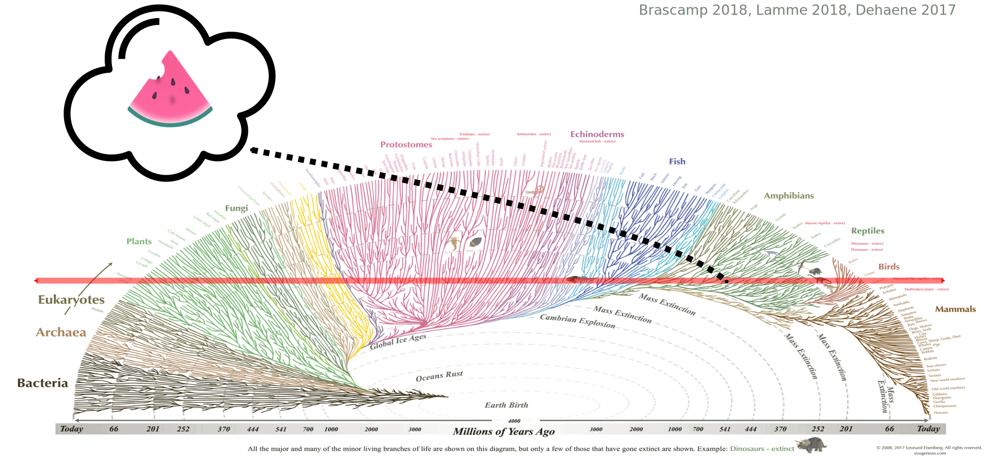
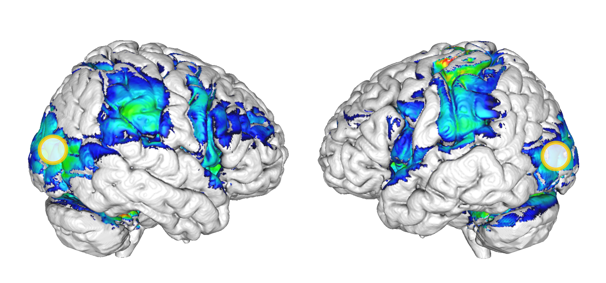
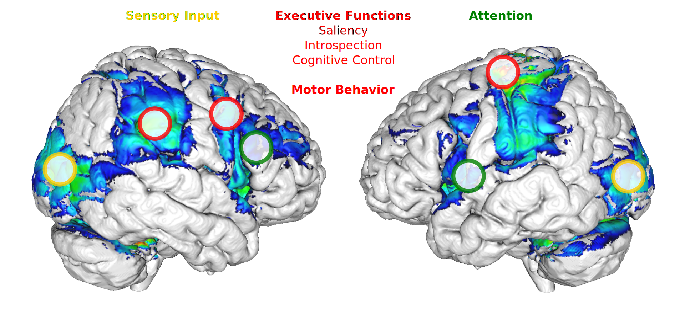
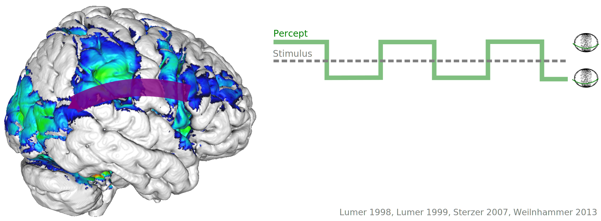
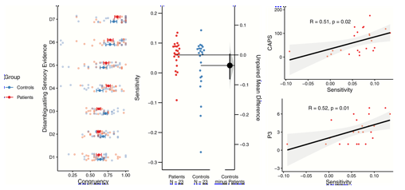
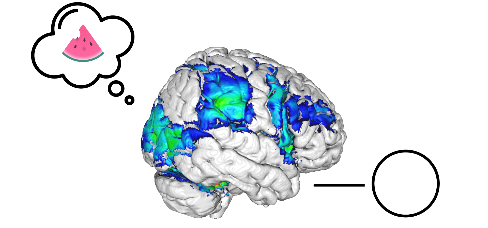

Consciousness and Psychosis
Where is the ghost in the shell?
Subjectivity

- How does subjective experience occur at all?
Neural Mechanisms

- What are the neural events that generate conscious experience?
Scale

- What is the scale at which conscious experience emerges from biological activity?
Function

- What is the evolutionary function of conscious experience?
Detection

- How can we detect conscious experience outside of the human mind?
5 problems

Mechanisms

Sensory Inputs

Executive Function

Attention

Experimental Dissociation

Bistable Perception

Bistable Perception

Bistable Perception

Bistable Perception

Predictive Coding

Summary
Computational Psychiatry

Computational Psychiatry

Computational Psychiatry

Computational Psychiatry

Thanks!
Weilnhammer, Fritsch, Chikermane, Eckert, Kathak, Stuke, Sterzer. An Active Role of Inferior Frontal Cortex in Conscious Experience. Current Biology 2021.
Weilnhammer, Stuke, Eckert, Standvoß, Sterzer. Humans and mice fluctuate between external and internal modes of sensory processing. bioRxiv 2021.
Weilnhammer, Chikermane, Sterzer. Bistable Perception Alternates between Internal and External Modes of Sensory Processing. iScience 2021.
Weilnhammer, Lukas, Eckert, Stuke, Heinz, Sterzer. Psychotic Experiences in Schizophrenia and Sensitivity to Sensory Evidence. Schizophrenia Bulletin 2020.